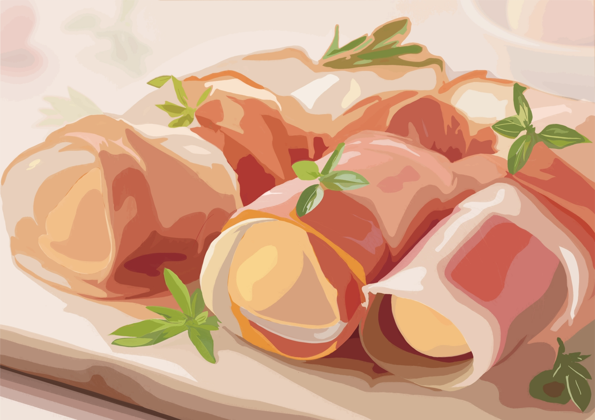

今月の人気桃レシピ


丸ごと桃とモッツァレラのビネガーサラダ レシピ・作り方
フレッシュな桃を丸ごと贅沢に！ふんだんに使用した、暑い時期にぴったりの桃とモッツァレラチーズのサラダです。生ハムの塩気がアクセントに、お酒も進む一品ですので、ちょっとしたおもてなし料理としてもオススメです。是非、お試し下さい。 調理時間：15分 費用目安：500円前後
材料
桃 1個
モッツァレラチーズ 100g
生ハム40g
(A)白ワインビネガー 小さじ2
(A)オリーブオイル 小さじ2
(A)塩 小さじ1/4
(A)黒こしょう 小さじ1/4
ベビーリーフ (飾り) 適量
手順
準備.桃は皮と種を取り除いておきます。
1.桃を薄切りにします。モッツァレラチーズを薄切りにします。生ハムを半分に切ります。
2.お皿に1の桃、モッツァレラチーズ、生ハムの順に交互に盛り付けます。
3.(A)をかけ、ベビーリーフを飾って完成です。